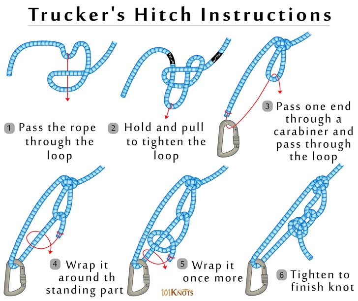

You don’t have to be a truck driver to have a use for this rugged hitch. The unique feature of the trucker’s hitch is it gives you a unique mechanical advantage for tightening up a line. While tying this hitch is a little complex, it’s worth the trouble if you need to tighten lines as much as possible before securing them—I use it all the time to tie down tarps or secure shifting payloads.
How to tie a trucker’s hitch:
Start off by tying a figure eight knot with a loop of the line. Then pass the free end of the line around or through whatever you’re attaching the rope to, before passing the line through the loop. Next, pull the working end tight, and secure the free end with two half hitches, just below the loop.
